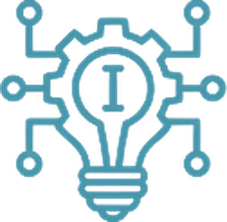
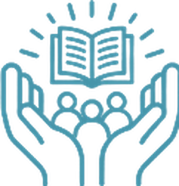
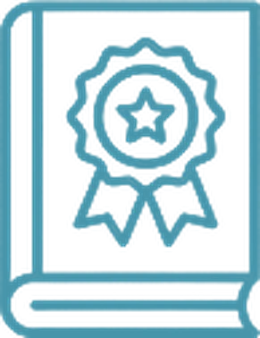

01
Integração
Reunimos profissionais da mentoria, interessados em gerar sinergias, para posicionar esta disciplina como um caminho de difusão de conhecimento procedimental e acionável, ao serviço dos Mentores.
Início / Governação e Autoridades
Institucional
A visão, os valores e o quadro de governação do ecossistema, e as autoridades que o conduzem.
Somos um ecossistema internacional de mentoria, integrado por comunidades culturais e linguísticas em diferentes países, que operam de forma autónoma e colaborativa sob um quadro comum de governação ética, com o propósito de humanizar a humanidade, expandir a consciência e contribuir para o desenvolvimento humano através da mentoria.
Ser a comunidade global de mentores mais influente, reconhecida e respeitada, impulsionando o desenvolvimento humano e a evolução espiritual de forma sustentável. Promovendo a coerência, a eficácia e a legitimidade da mentoria como disciplina profissional, integrando a diversidade cultural e o alcance científico em benefício da humanidade.
Conectar, formar, certificar e servir a comunidade internacional de mentores, potenciando a sua qualidade, ética e profissionalismo. Desenvolvemos o campo de ação, o impacto científico e a modalidade de atuação profissional da mentoria, reforçando a sua presença e legitimidade em todas as regiões e culturas do mundo.
Reunimos profissionais da mentoria, interessados em gerar sinergias, para posicionar esta disciplina como um caminho de difusão de conhecimento procedimental e acionável, ao serviço dos Mentores.

Trabalhamos guiados pelo esforço inovador e desenvolvedor da Mentoria como Profissão.
Impulsionamos o crescimento e o desenvolvimento pessoal e profissional da comunidade de mentores profissionais.

Partilhamos ideias, experiências e boas práticas de mentoria profissional, como processo de transmissão informal de conhecimento, capital social e apoio psicossocial, percecionados pelo Mentor como relevantes para a sua carreira profissional, pessoal ou desenvolvimento profissional.

Orientamos as nossas ações no quadro das normas, regras e procedimentos do Código Deontológico da RGMentores.
A governação da Rede assenta num equilíbrio entre direção estratégica e execução descentralizada.
Tudo se enquadra na “Carta Magna Global”, documento que define a estrutura, as funções e os princípios de funcionamento da nossa comunidade e, na sua versão reduzida, o “Guia de Governação Pública”.
A nossa atuação rege-se por um “Código Deontológico” que garante transparência, respeito e qualidade profissional em todos os processos.

Os documentos que enquadram a governação da rede. Abrem em PDF.
A liderança que impulsiona a mentoria global
As três organizações contam com uma equipa de autoridades que constitui o seu núcleo estratégico e operacional. Esta liderança atua sob a orientação da Presidência Global e a aprovação estratégica do Conselho Mundial de Mentoria, para garantir coerência, qualidade e expansão em todos os continentes.
Órgão colegial que aprova a estratégia global e zela pela coerência ética, cultural e profissional das ações. É integrado por líderes internacionais da mentoria.


Define a visão geral, impulsiona a estratégia de expansão e zela pelo cumprimento dos princípios da Carta Magna. É a voz e o rosto institucional da rede a nível mundial, e representa-a perante organismos internacionais, governos, empresas e universidades.


Desenha e coordena a estratégia de crescimento nas 12 áreas temáticas de aplicação da mentoria, em alinhamento com a Presidência Global e com os Vice-Presidentes Executivos responsáveis pela implementação.

Desenha a estratégia de expansão e reforço em cada região do mundo, adaptando-a às suas realidades culturais e sociais, e coordena a sua execução com os Vice-Presidentes Executivos Regionais.
São a máxima autoridade operacional em cada região ou país. Executam a estratégia das Direções Estratégicas, reforçam a comunidade de mentores e garantem o impacto local.


Mentores que representam a rede nos seus países.


Bem-vindo à Rede Global de Mentores (RGM), uma organização internacional que une culturas, línguas e profissões para elevar a mentoria como uma disciplina de elevado impacto humano, ético e social.
Acreditamos numa mentoria que nasce da experiência refletida, em que o vivido se transforma em sabedoria partilhada e num profundo ato de humanização.
Organizamo-nos como um ecossistema internacional de comunidades culturais e linguísticas, guiadas por uma governação ética e participativa, e sustentadas por plataformas formativas e de divulgação que impulsionam a profissionalização de mentores a nível global.
Desde 2013 construímos uma rede de referência mundial.
Hoje convidamo-lo a juntar-se e a deixar um legado que transcenda fronteiras e gerações.
Eng. Alejandro Motta · Presidente Global
Obrigado a quem guiou a rede ao longo da sua história.
Em 2014, na cidade de São Paulo, um grupo de mentores visionários formou um Comité Diretivo para lançar as bases de uma comunidade internacional de mentoria. Até então conhecida como Rede Hispano-Americana de Mentores, a iniciativa ampliou o seu alcance e adotou o nome Rede Global de Mentores (RGM), refletindo a sua vocação de integrar culturas, línguas e abordagens de todo o mundo.
Desde então, a RGM evoluiu para um ecossistema que liga e potencia comunidades irmãs —a Rede Global de Mentores (ReGM) e a Global Mentoring Network (GMN)— com o propósito de profissionalizar a mentoria, reforçar a sua legitimidade e expandir o seu impacto global.
Hoje, vários desses mentores fundadores continuam a fazer parte do Comité Diretivo, que lidera o desenvolvimento e a consolidação do modelo organizacional. Esta visão avança para uma Organização Autónoma Descentralizada (DAO), combinando a força de um holding global de serviços para a mentoria com a autonomia de comunidades multiculturais interligadas.